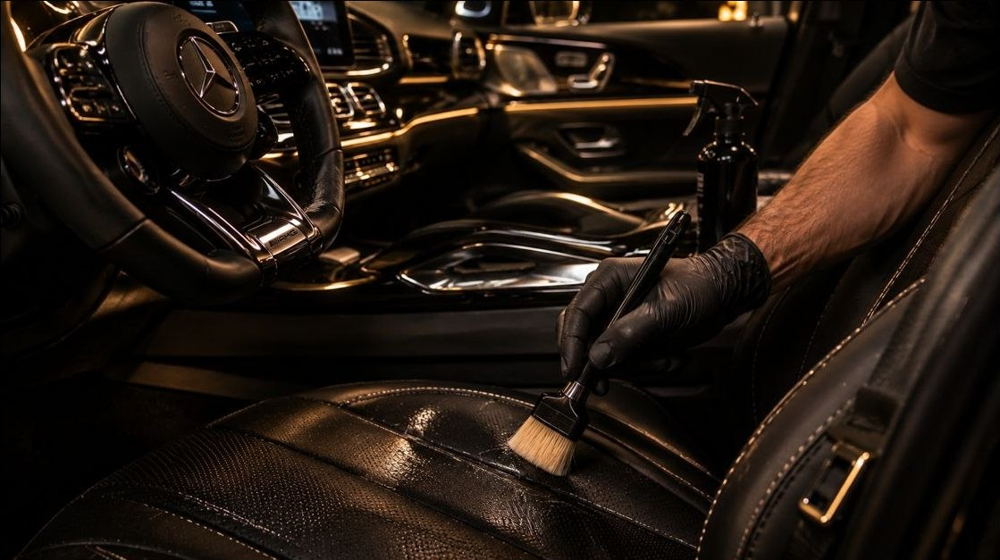

Чистота и микроклимат внутри автомобиля
Каждый день салон автомобиля подвергается серьезным испытаниям: пыль с улицы, шерсть домашних животных, следы от пролитого кофе и износ кожи на водительском сиденье. Обычная влажная уборка лишь загоняет грязь глубже в поры текстиля и кожи.
Профессиональная детейлинг-химчистка подразумевает полную глубокую реставрацию интерьера с использованием мощных моющих пылесосов, торнадоров, парогенераторов и сертифицированной гипоаллергенной химии, безопасной для детей и людей с аллергией.

Пошаговый регламент химчистки:
- Тщательный вакуумный сбор пыли, песка и мелкого мусора в труднодоступных местах (салазки сидений, карманы дверей, воздуховоды).
- Деликатная чистка потолка и солнцезащитных козырьков щадящими пенными составами без риска отслоения ткани.
- Глубокая обработка сидений (кожаных, текстильных или комбинированных) с удалением сложных въевшихся пятен.
- Кондиционирование и питание кожи специальными кремами, восстанавливающими мягкость и предотвращающими появление трещин.
- Финишное озонирование салона для уничтожения болезнетворных бактерий, грибка в системе кондиционирования и стойких запахов (табака, еды).
Актуальный прайс-лист (Химчистка салона)
Цены синхронизированы в реальном времени.
| Класс автомобиля / Услуга | Время работы | Стоимость (BYN) |
|---|---|---|
| Комплексная химчистка (Седан / Хэтчбек) | 1 день | 320 руб. |
| Комплексная химчистка (Кроссовер) | 1 день | 380 руб. |
| Комплексная химчистка (Внедорожник / Минивэн) | 1–2 дня | 450 руб. |
| Озонирование и антибактериальная обработка | 1 час | 60 руб. |